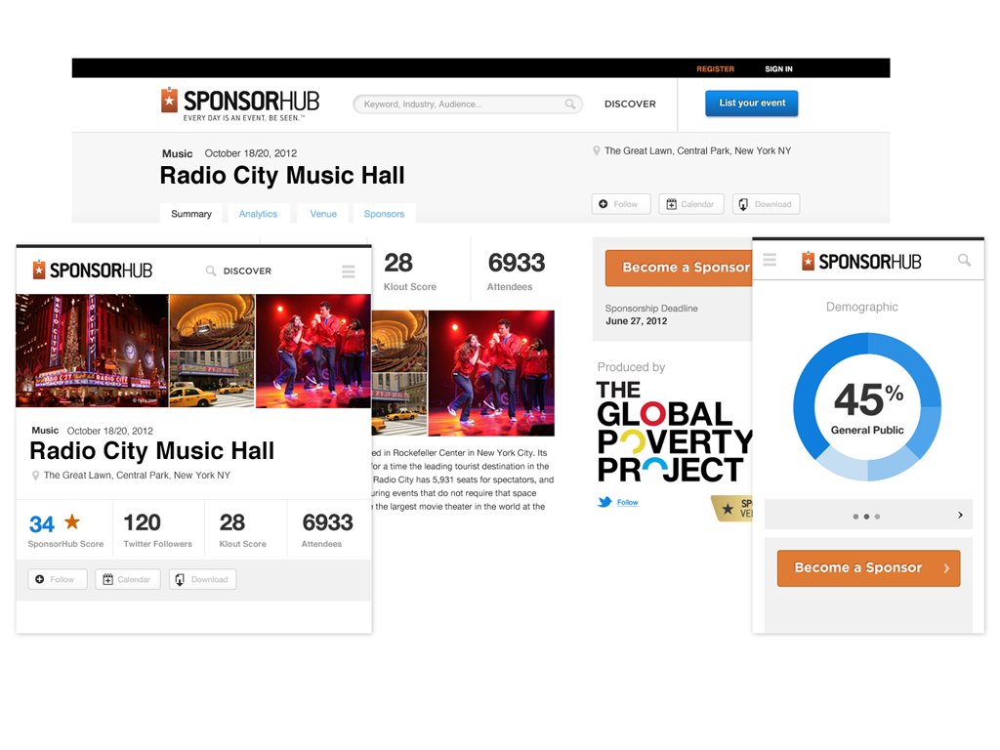
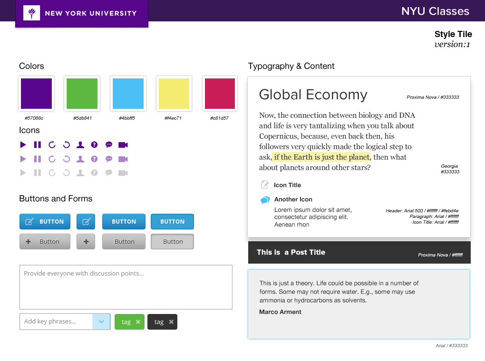
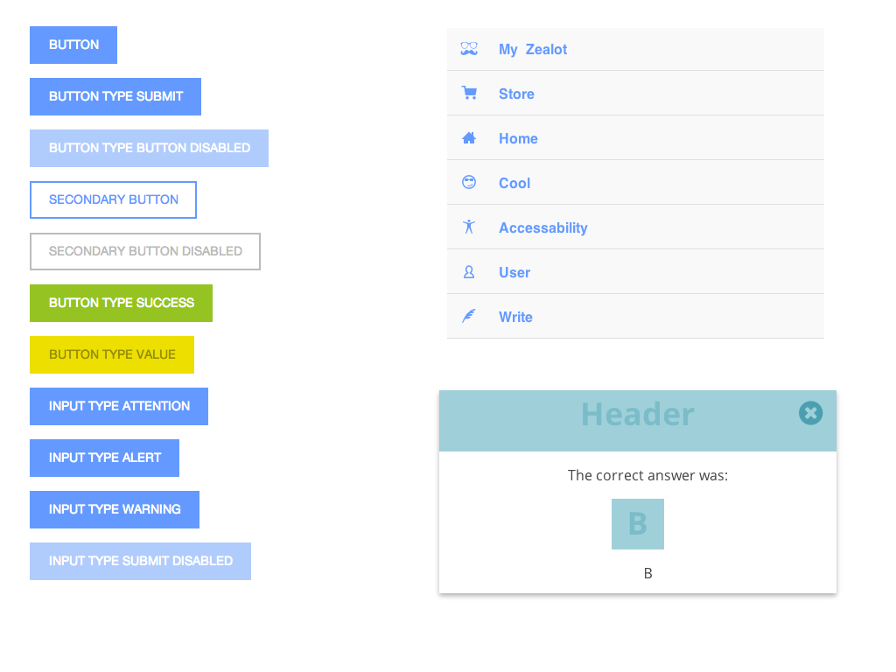
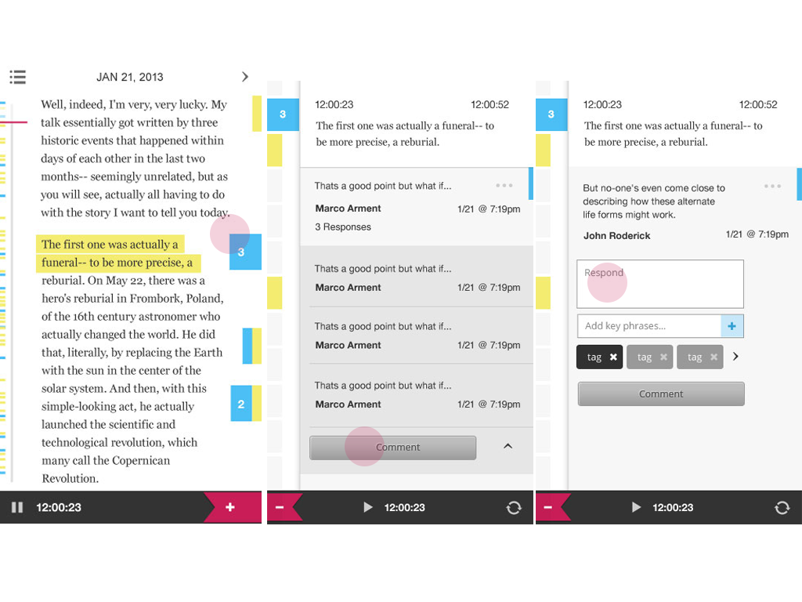

This is how we do it
Designers, Developers, Clients + Users
Created by
So many new shiny
Content Strategy, Mobile First
Backbone, Ember
Compass, Sass
Bootstrap, Foundation
Grunt, Capistrano
Building Blocks of Collaboration
Design
Interface
Development
All of this is tied together with...
User Experience
Who we are
Antonio, Grant, Jesse, and Michael
Break down traditional silos
Silo
User Experience Design Front End Development
Sprint
Sprint 1 Sprint 2 Sprint 3 Sprint 4
Collaborative
Sprint 1
Focus on Content
Hypothesis
User Experience
Stakeholder: Motivations
Q. What aspects of the site are most important to you?
"That it makes investors happy, and that we don't keep getting negative reviews about it."
"That it is easy for external researchers to find our online software tools. It is basically impossible to find them now."
"Clear information on our research"
"All pages are important but probably the home page, "About" and "News" are most important."
Interview patterns
User, Content & Form
Persona Voice
Motivation
We value a site that appeals to investors and specialists that clearly identifies our history and our researchFrustration
We need improved navigation that allows users to explore our content on a more graphic levelContent Hierarchy
- Find patterns of value and overlap between users and content
- Define the Content Stack with a priority outline
Mapping Value from Users to Content
Mapping Value from Users to Content
- Add up the volume and sentiment for each User Type from your interviews
- Associate each User Type has a particular Content Type
- Create your Content Stack according to value of user served
Content Stack
Summary
- Ask questions targeting primary Motivations and Frustrations
- Connect and relate your Users with your Content
- Create a Content Stack according to the cumulative value
Sprint 2
It's all going to break
Modular Design Thinking
- Respect your content hierarchy
- Establish a visual pattern library
- Have front-end development components in place
Front End Interface
Responsive Thinking
Grids are an Enhancement
- Storytelling comes first
- Designers focus on content one piece at a time
- Establishes vertical type grid and rhythm
Semantic Photoshop
Source vs Layers
- Ability to do rapid high fidelity details
- Allows designer to sketch basic markup objects using layers and groups
- Facilitates a tactile quality to components and objects
- Creates distance between the design and the development
- Focuses on details too quickly and not broad progressive enhancement
- Doesn't benefit from the cascade
Stile Guide
Pattern Library
Design in Source
-
Provides a more accurate model to the client and developer.
-
What they see is what they get.
-
Makes the designer responsible for UI complexity and responsiveness
-
Allows the designer a level of quality control they didn't have before
-
DRY components mean less work and more independently responsive parts
- Allows for experiments and testing of flows and new features
Know Your Material
Mobile First & Source Order
Genesis Framework
- Created by Studiopress
- We install the base theme first and get the client into the system to manage their content as early as possible
- We use the Genesis framework parent theme
- Create a custom child theme
Hook it Up
A Closer Look
Hooks & Parts Inventory
Sprint 3
Developing Empathy
Adding Interaction
Design in Action
- Interactive events are static at first. Allows for progressive enhancement to be built into the components
-
Designers should play with jQuery UI so they have a basic understanding of what can be done
-
Collaboration between team members allows for interdisciplinary conversations about user flows.
-
"Just in time" events emerge from the interplay of user needs and tech feasibility
Prepare the Development Environment
Install and provision virtual machine
- OS, LAMP, PHP Modules
- Ruby, Sass + Compass
- Share local folder with virtual machine, work in your desired editor
We’re all on the same page
- Development environments match
- Frameworks all the same version, less room for conflict
Package Box for sharing
Upload to AWS S3
$: vagrant package
Get the team into the dev environment
- Download and Install Vagrant + VirtualBox
- git pull latest version
- Machine downloads and starts
- Front-end developer connects with vagrant environment
- Start working in Sass
- Compass is already watching project
$: vagrant up
A Quick Word About Source Control
One of the best ways to enhances collaboration
- Add project files
- Add vagrant config
- Track all changes in a git repository
- Essential for collaborative development
- Protects your client’s code
Time to get the team into the dev environment
Vagrant Up!
- Machine downloads and starts
- Front-end developer connects with vagrant environment
- Start working in Sass
- Compass is already watching project
Concatenate and Compress
We like Grunt for this
- Require-js build
- Cache busting
- Start working in Sass
- Allows you to develop in uncompressed, easy to read JS files
Make sure your production environment is ready
- Make sure your production environment is ready
- Do you have a domain?
- Use a WP managed host
Sprint 4
Plug it In
Custom Coding
WordPress is now a robust CMS
WP Alchemy: Custom Meta Boxes
- PHP Class written by Dimas Begunoff (deem-uss begun-off)
- Great abstraction of your custom metabox code
- Keep the html of your meta boxes separated from your logic
- Great documentation
Great looking Meta Boxes
Clean Abstraction
Template Part: metabox-property.php
<?php $mb->the_field('address_1'); ?>
<?php $mb->the_field('display_address'); ?>
<?php $mb->the_field('google_map'); ?>
<?php _e('Paste Google Map iframe HTML code.'); ?>
<?php $mb->the_field('price'); ?>
<?php _e('Price in whole USD. Do not include "$" or ",".'); ?>
Posts 2 Posts
- Plugin written by Silviu-Cristian Burcă (scribu) and Alex Ciobica
- Building relationships between your post types is very easy now
- Great documentation
Define Your Relationships
// Properties to Neighborhood Connection
p2p_register_connection_type( array(
'name' => 'properties_to_neighborhood',
'from' => 'property',
'to' => 'neighborhood',
'cardinality' => 'many-to-one',
) );
// Facts to Neighborhood Connection
p2p_register_connection_type( array(
'name' => 'facts_to_neighborhood',
'from' => 'fact',
'to' => 'neighborhood',
'cardinality' => 'many-to-one',
) );
// Facts to Property Connection
p2p_register_connection_type( array(
'name' => 'facts_to_properties',
'from' => 'fact',
'to' => 'property',
'cardinality' => 'many-to-many',
) );
Simple Admin For Relating Content
Set up your deployment and build process
Automated deploy FTW!
Demo Time!
- Capistrano for deployment
- Multi environment deploy
- Grunt files up
Release is optional
- The Internet is never done
- Sometimes the client just isn’t ready for “release”
- Your timeline and your client's might not match
Introducing the Product Cycle
- Iterative, rinse and repeat cycles
- Continue to focus on outcomes over deliverables
- Enhancments to the currnet product
Unicorns are cool, but friends are better
Know your strengths and know when to ask for help.
Develop empathy for the talents of others
- Stronger end product
- Less roads blocks in the process
- Shift focus from deliverable to outcomes
- No more CYA = More fun!